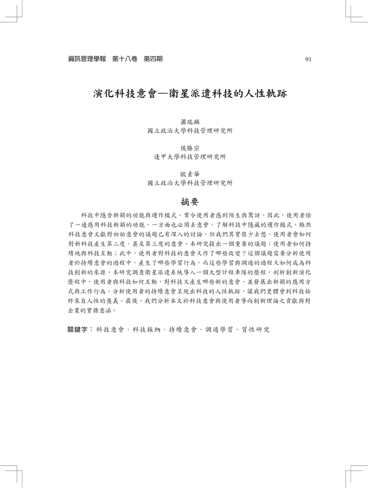
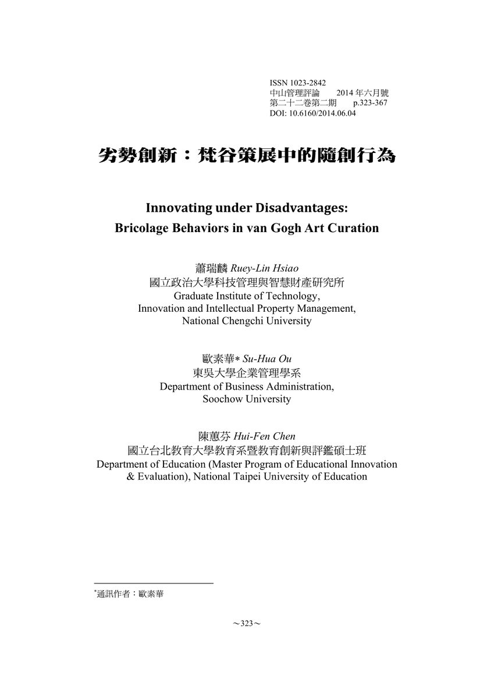

Posted by Hsien-Hui Tang 唐玄輝 · Jun 08, 2020 at 4:03 AM 這是推薦閱讀的蕭教授論文 我們日後會慢慢朝這個方向前進，然後我們的差異是，一年做出有影響力的設計案，一年用個案寫作的方式來呈現，所以不是做設計過程報告，是於設計中找出值得討論的點子，做成個案研究。  演化科技意會-衛星派遣科技的人性軌跡.pdf 2.39 MB • Download  劣勢創新-梵谷策展中的隨創行為.pdf 817 KB • Download